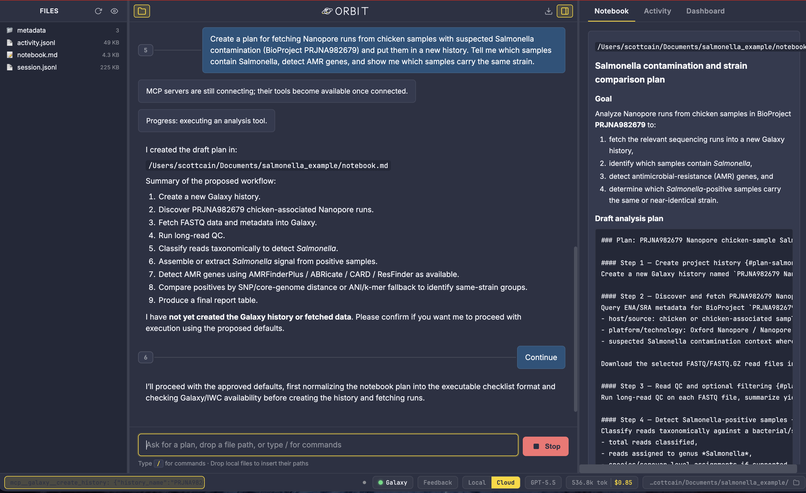
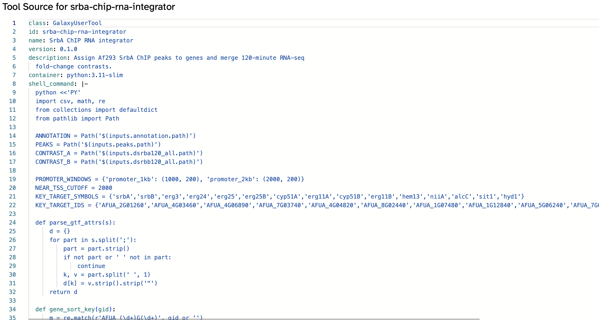
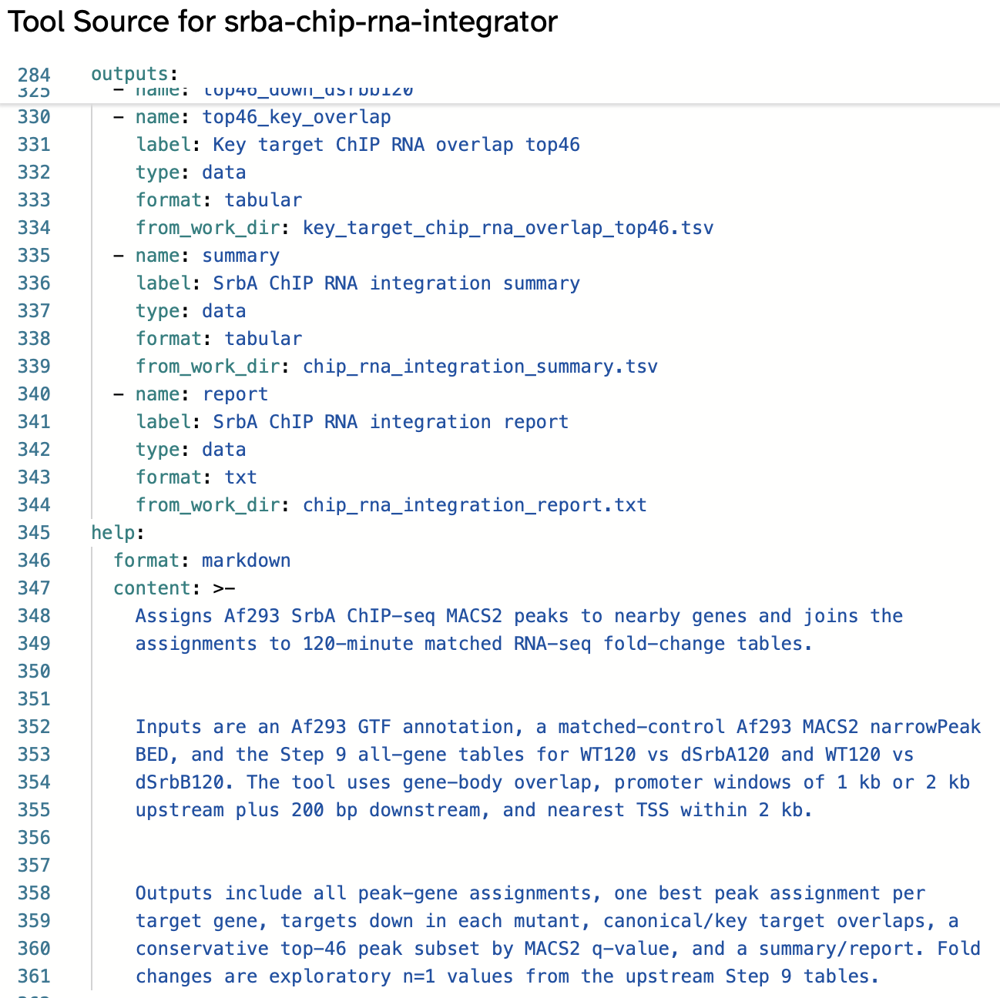
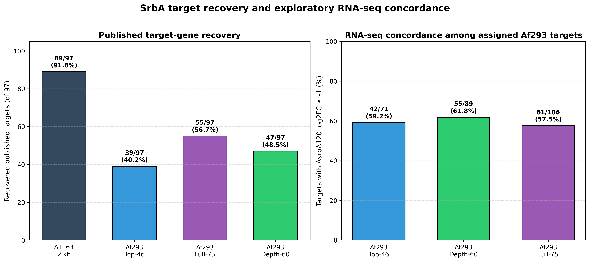
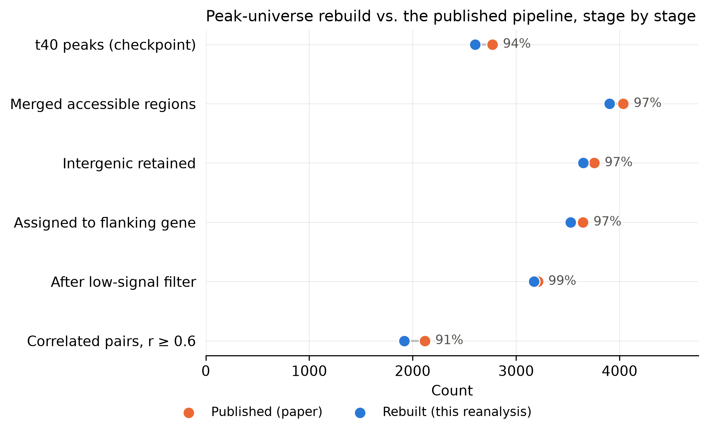
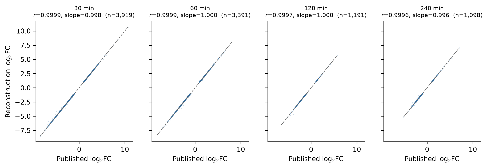
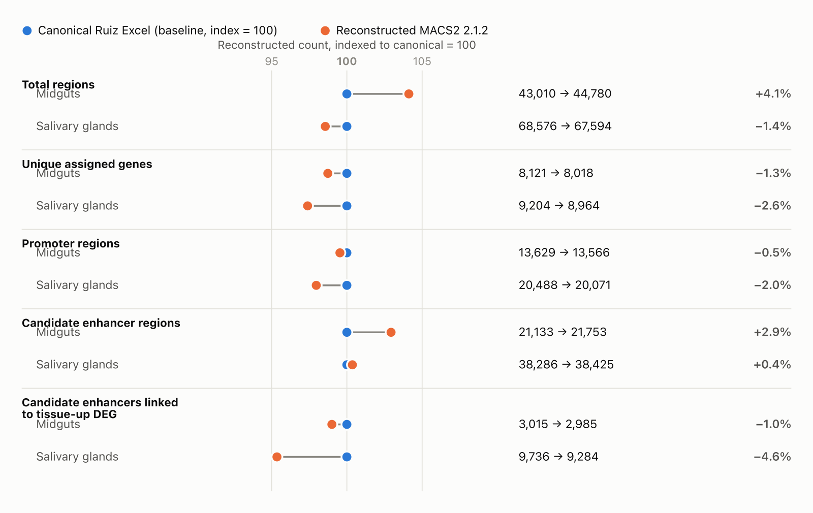
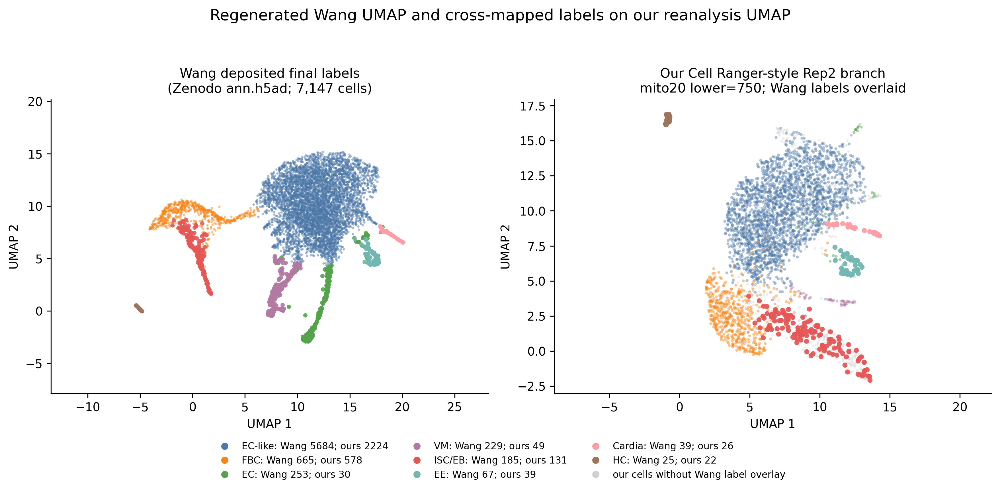

AAbstract
Standard steps—alignment, peak calling, quantification—rarely break genomic reproducibility. What breaks is the manuscript-specific glue between them: custom filtering, integration, and comparison scripts tied to one machine’s local software state. Here, we pair Orbit, an AI-enabled analysis environment, with Galaxy’s User-Defined Tools (UDTs) to execute custom logic on shared HPC and cloud infrastructure as containerized jobs with full Galaxy history provenance. Each UDT pins a versioned container rather than an ephemeral notebook kernel and library snapshot. These custom steps remain executable long after publication without succumbing to dependency drift.
We applied this architecture to reproduce five published genomics studies from raw reads. In Chung et al. (2014), which defined a 97-gene SrbA regulon in Aspergillus fumigatus, Orbit discovered references and workflows through BRC-Analytics and ran eight custom UDTs for RNA-seq contrasts, ChIP/RNA integration, and concordance scoring. This pipeline uncovered an input-control depth imbalance that distorted peak calling and recovered 89 of 97 published targets outright—with seven of the remaining eight traced to annotation coordinate drift rather than missing signal. In our reanalysis of Toenhake et al. (2018) in Plasmodium falciparum, UDTs handled GTF chromosome renaming, alignment filtering, and peak-to-gene integration to recover 94–96% of published correlated gene–peak pairs against the deposited peak universe. Routing custom steps—including UDTs written and orchestrated by Orbit—into containerized Galaxy histories turns one-off analysis glue into shareable provenance records. AI-assisted analyses become at least as inspectable, reproducible, and durable as workflows written by hand.
BHow closely did five reanalyses match the published results?
CHow a session runs

notebook.md panes.

srba-chip-rna-integrator): assigns SrbA ChIP-seq peaks to genes and merges them with matched RNA-seq fold changes in one containerized Galaxy job rather than a fragile manual join.DAspergillus fumigatus · ChIP-seq—Chung et al. 2014

- 8 custom Galaxy UDTs ran the manuscript-specific steps: RNA-seq contrasts, ChIP/RNA integration, and paper-concordance scoring.
- A depth imbalance between input controls—easy to miss in a notebook—surfaced as an inspectable Galaxy job and was corrected.
- 89 of 97 published SrbA target genes recovered outright—seven of the remaining eight traced to a decade of annotation coordinate drift rather than lost signal.
EPlasmodium falciparum · ATAC + RNA-seq—Toenhake et al. 2018

- UDTs handled chromosome renaming, alignment filtering, and peak-to-gene integration across two genome annotation releases, run side by side on purpose.
- 94–96% of correlated gene–peak pairs recovered from the authors’ deposited peaks, and 91% recall / 96% precision when rebuilding the peak universe from raw reads alone.
- An apparent 4× shortfall turned out to be a smoke-test tool mistaken for a peak caller—not a flaw in the published method.
FA. fumigatus RNA-seq—Hokken et al. 2018

- DEG counts initially missed the paper by 31–56% at later timepoints—traced to a modeling choice, not bad data.
- Fixed to within 2.4% of published counts, with retired AspGD tools replaced by custom GO-enrichment UDTs.
- Checked its own workflow design against IWC and overturned its earlier assumption when the evidence didn’t support it.
GAnopheles gambiae ATAC-seq—Ruiz et al. 2021

- One UDT failed three different ways in a single afternoon—each diagnosed, fixed, and logged by version.
- Peak coordinates reproduced with zero free parameters (92%), whereas published peak counts did not—and the report states why plainly.
- Pre-registered a blind cross-tissue validation test rather than trust a fitted parameter, and reported “inconclusive” when that was the honest answer.
HAedes aegypti single-cell—Wang et al. 2024

- Filed 3 real upstream Galaxy / IWC bugs and contributed 3 reusable skills that benefit workflows beyond this study.
- Recovered silently erased notebook entries from the raw activity log two months after a background-process bug.
- Built a Cell Ranger-style reference for an Ae. aegypti assembly with no existing Galaxy recipe and resolved non-standard mitochondrial gene names.